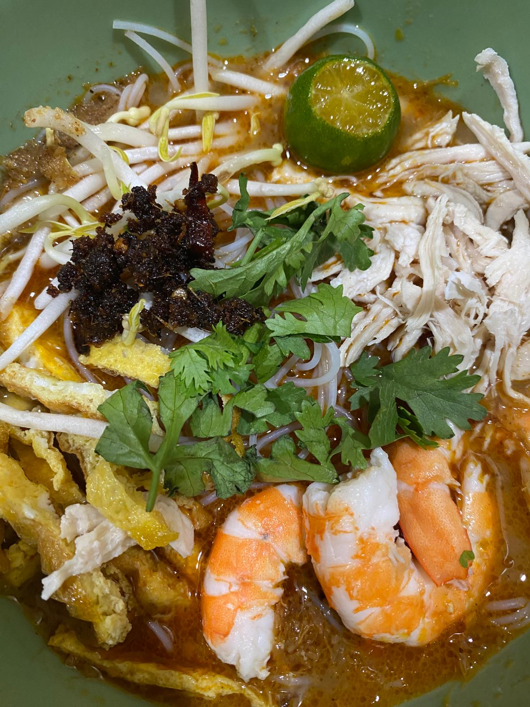
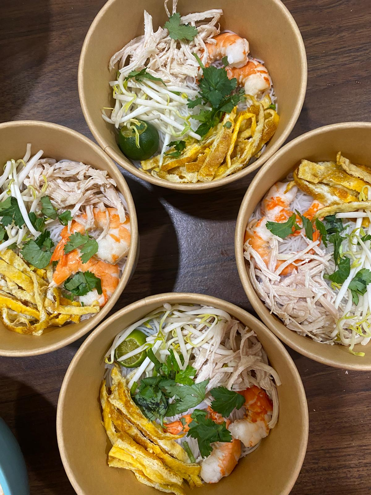

Dari Sarawak, dengan rasa
Semangkuk nyamai, sampai ke JB.
Laksa Sarawak yang membawa rasa kampung halaman: kuah dari Kuching, sambal belacan udang Bintulu dan bahan segar dalam setiap mangkuk.
Kenali laksa kami
Cerita rasa nyamai
Rasa Sarawak, dibuat dengan hati di JB.
Rasa Nyamai ialah dapur dari rumah oleh orang Sarawak yang menetap di Johor Bahru. Sejak 2024, kami berkongsi Laksa Sarawak yang kaya rasa dengan pelanggan yang kembali lagi untuk semangkuk seterusnya.
Kuah laksa dari Kuching bertemu rasa umami sambal belacan udang Bintulu. Telur, udang, ayam dan tauge segar dilengkapkan dengan perahan limau yang menaikkan setiap suapan.
KuchingAsal kuah laksa
BintuluSambal belacan udang
Johor BahruTempat kami menyajikannya

AsliSarawak
sejak 2024
Kata pelanggan
Dengar sendiri daripada mereka.
Baca ulasan pelanggan Rasa Nyamai di Google.
Singgah atau hubungi kami
Rasa Sarawak di Johor Bahru.
Rasa Nyamai ialah dapur dari rumah. Semak lokasi melalui Google Maps dan hubungi kami sebelum berkunjung.
Buka lokasi di Google Maps